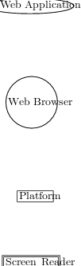

ARIA support in a traditional screen reader requires the following actors to
collaborate:
Web App
Making a web app accessible with ARIA requires the collaboration
of the web application — in this case, that translates to web authors
adhering to good authoring practice.
Browser
The browser needs to consume ARIA markup and expose
platform-specific accessibility objects to native screen readers —
HTML elements augmented with ARIA roles get mapped to their
platform-equivalent widgets. Events on these generic HTML objects need
to get translated into platform-specific events on the accessible objects. For
features that have no corresponding platform equivalent, browsers need to
expose custom details.
Platform
The platform needs to propagate these objects and events to the
adaptive technology (AT).
AT
Adaptive technology needs to generate the appropriate feedback for these
objects and events. In many cases, widgets built using ARIA may not
resemble native platform widgets in detailed form and function, even
though they user the same roles. As a result, describing them may require
a lot of custom handling.

HTML DOMAccessibility APIAccessibility API
Figure 3: W3C ARIA in a traditional screen reader.